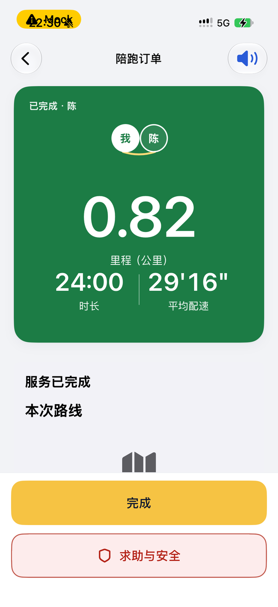
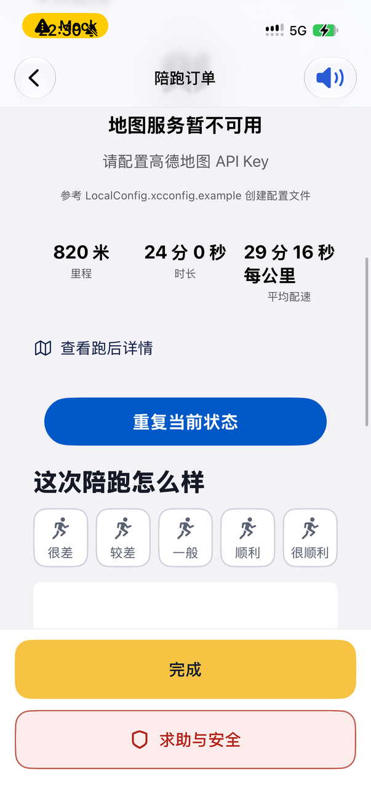
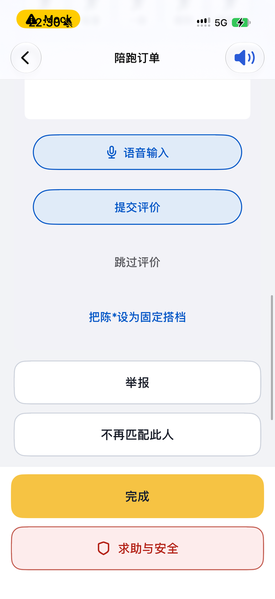
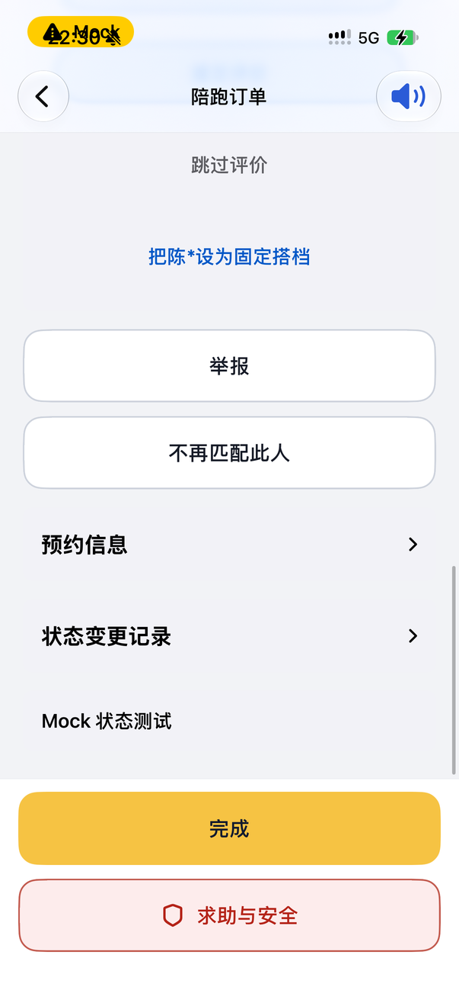

已完成订单页只留绿色卡；评价与「设为固定搭档」换位置、换新样式 · 设计稿
issue #831（母 issue #827 第 2 项）。2026-11-07 出稿，待负责人确认，没写代码。
「现在」一栏全是真机截图（iPhone，Mock 数据，UI 测试构建没有高德 key，所以地图处是「地图服务暂不可用」；Mock 里绿色卡 0.82 公里与详情页 3.20 公里对不上是 Mock 数据本身的问题，不是界面问题）。
「改后」里的绿色卡与跑步详情页上半截是真机截图原样裁出来的，只有新加的块是画的。按钮照 #749 定稿：胶囊，一屏只有一个实心。
① 跑步详情 →「订单」打开的已完成订单页：只留绿色卡
绿色卡排版完全不动（截图原样）。去掉的是绿色卡下面整串：服务已完成 · 本次路线 · 重复当前状态（导航栏右上的喇叭就是它，功能不丢）· 这次陪跑怎么样 · 语音输入 · 提交评价 · 跳过评价 · 设为固定搭档 · 举报 · 不再匹配此人 · 预约信息 · 状态变更记录。底部「完成」「求助与安全」不动。




现在真机，从上往下滑四屏。绿色卡下面一共 12 块，要滑三屏多才到底。
改后 · 推荐 A只留绿色卡，下面留空。和负责人说的一致。
改后 · B绿色卡下面多一行链接，进跑步详情。只在首页跑完当场这条路上有用（见下面问题 1）；从跑步详情进来时这一行回到来处，可以不显示。
问题 1（要负责人定）：已完成订单页有两个入口，①首页跑完当场（跑步中 → 完成，停在这一页）②跑步详情底部那一行。现在评价表在这一页，跑完当场就能评。评价挪进跑步详情后，A 方案下跑完当场这一页没有去跑步详情的路，要回首页 → 记录 → 点这一次才看得到评价。B 在绿色卡下加一行解决这件事，但绿色卡下面就不是全空了。我推荐 A（照原话），如果您在意「跑完当场评」，选 B。
② 「这次陪跑怎么样」挪到跑步详情页：两个位置
规则不变：没评过的可以补评一次；评过的只显示结果，不能改（后端也不收第二次，重复提交回「已评价过此订单」）。五档仍是「很差 / 较差 / 一般 / 顺利 / 很顺利」，默认一项都不选；读屏念档名，不念分数。
甲 · 推荐放在头部那两个小数字下面、「详细信息」上面。一进页面就看得见（第一屏露出五个选项），点一下就开始评。
甲 · 选了一档选了才展开评语、语音输入、提交。「提交评价」是这一页唯一的实心按钮。不再有「跳过评价」（不想评就不点，不用跳过）。
这次陪跑怎么样
🏃
顺利
「节奏很稳，下次还约。」
11月6日 23:10 评价 · 评价后不能修改
甲 · 评过了提交成功或以前评过，整块换成一张只读卡：档名、评语（没写就不显示这行）、评价时间。没有按钮。读屏一次念完：「这次陪跑：顺利，评语：……，11月6日 23:10 评价，不能修改」。
乙放在页面最底，原来「订单详情与评价」那一行的位置。比现在少点一次、少进一页，但仍要滑到底（真机约四屏）。
推荐甲的理由：负责人嫌现在「滑到最下面 → 小卡 → 再点」太深；甲进页就看得见、一次点击开始评，评过后只占一小块、不挡后面的数据。读屏顺序：头部 →（听这次跑步）→ 两个小数字 → 这次陪跑怎么样 → 详细信息……，比乙少划几十下。
加载中：这一块先不出现，拿到「有没有评过」再出现（取不到时按「没评过」显示，重复提交由后端拦，与现在一致）。提交失败：卡片里提交按钮下多一行红字并播报，选的档和评语都保留。
③ 「设为固定搭档」换成新样式（放跑步详情页下方「陪跑员」一节）
样式照已定稿的固定搭档页（blind-partners-20261105/）：圆形首字头像 + 名字 + 一句状态；按钮用 #749 的浅蓝描边胶囊（这一页实心留给「提交评价」）。说明句沿用现有文案「更可能派给他，但不保证」，不写「优先」。
现在订单页中段一行蓝字「把陈*设为固定搭档」，夹在「跳过评价」和「举报」之间，看不出是个功能。
改后 · 还不是搭档「陪跑员」一节在路线下面、举报上面。举报 / 不再匹配此人原样留在最下（已有，不动）。
改后 · 已是搭档按钮消失，状态改成「你的固定搭档」，整行可点，进这位搭档的详情页（连续几周、一起跑完几次、取消固定搭档都在那里）。刚点完时卡下多一行绿字并播报；以后再进就只有这一行。不在这里放「取消」（同现在）。
其他状态
· 点了「设为固定搭档」还在提交：按钮淡下去，文案「正在设为固定搭档…」。
· 失败：卡下一行红字并播报，文案沿用现有的四条（还不能设 / 数量到上限 / 对方已退出 / 稍后重试）。
· 查不到是不是搭档（接口失败）：整个「陪跑员」一节不出现，同现在。
· 对方已退出和你的固定搭档：状态写「对方已退出固定搭档」，没有按钮。
· 读屏：头像不念；「陈，还不是固定搭档」一个焦点，按钮单独一个焦点，提示念说明句。
④ 跑步详情底部「订单详情与评价」那一行：改名
现在「订单详情与评价 ›」，读屏提示「查看订单，提交或查看评价」。
改后 · 推荐名字改成「陪跑订单」，和那一页导航栏标题同名（同一个东西只用一个名字）；下面一行灰字说明进去是什么。读屏提示改成「打开这一单的订单页」，不再提评价。
问题 2订单页改完只剩一张绿色卡，内容和跑步详情的头部重复（距离、时长、配速）。这一行也可以直接去掉，跑步详情就不再往订单页跳。
我推荐留着并改名：绿色卡是「我和陈一起跑完」的那张卡，有人会想回去看；去掉它就是一处单独的删除，可以以后再定。
不在本稿陪跑员端跑后详情不动（这次只改跑者端）。